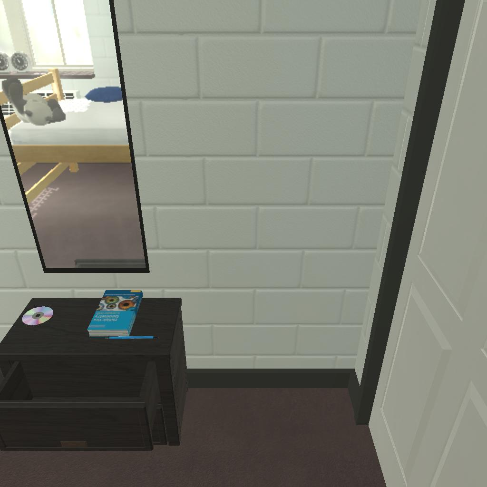

---------------------------------------------------------task: 8---------------------------------------------------------
--------------------------------------------------------------------------------------------------------------------------------------------------------------------
--------------------------------------------------------------------------------------------------------------------------------------------------------------------
Step:--------------------------------------------------------------------------15-------------------------------------------------------------------------------
----------------------------------------
VLM Prompt:
**Task**
Please perform as an embodied AI agent. Our final objective is to put some laptop on desk. Below is the plan for completing the task, the current observation, alongside historical data and admissible actions for the next step. Please determine the best action for the next step!
**Plan**
Below is a detailed step-by-step plan to complete the task.
1. Find a laptop.
2. Pick up the laptop.
3. Find a desk.
4. Place the picked-up laptop on the desk.
**Current Observation**
Displayed is an image capturing the current position of the agent.
**History Information**
Displayed are the previous observations with their corresponding actions.
Current State 1:
1. Place: Unknown room
2. Step Index in Plan: 1
3. Objects: Sidetable, book, CD, garbage can, door
4. Action: Go to sidetable 1
Current State 2:
1. Place: Sidetable 1
2. Step Index in Plan: 1
3. Objects: Book, CD
4. Action: Go to desk 1
Current State 3:
1. Place: Desk 1
2. Step Index in Plan: 2
3. Objects: Alarm clock, cellphone, pencil, pen
4. Action: Go to drawer 1
Current State 4:
1. Place: Near Drawer 1
2. Step Index in Plan: 2
3. Objects: Sidetable, book, CD, mirror, bed, desk, items on desk
4. Action: Open drawer 1
Current State 5:
1. Place: Room
2. Step Index in Plan: 2
3. Objects: Sidetable, CD, Book, Drawer 1
4. Action: Go to drawer 4
Current State 6:
1. Place: Near Drawer 1
2. Step Index in Plan: 2
3. Objects: Desk, Alarm clock, Cellphone
4. Action: Open drawer 4
Current State 7:
1. Place: Room with Desk 1
2. Step Index in Plan: 2
3. Objects: Alarm clock, cellphone
4. Action: Go to drawer 1
Current State 8:
1. Place: Room
2. Step Index in Plan: 2
3. Objects: Sidetable, CD, Book, Mirror, Bed, Desk
4. Action: Go to desk 1
Current State 9:
1. Place: Desk
2. Step Index in Plan: 2
3. Objects: Alarm clock, pencil
4. Action: Go to drawer 2
Current State 10:
1. Place: Side table with a book and CD
2. Step Index in Plan: 2
3. Objects: Drawer 2, Drawer 3, Drawer 4, Drawer 5, Book, CD
4. Action: Go to drawer 3
Current State 11:
1. Place: Desk
2. Step Index in Plan: 2
3. Objects: Alarm clock, Cellphone
4. Action: Open drawer 3
Current State 12:
1. Place: Desk
2. Step Index in Plan: 2
3. Objects: Alarm clock, cellphone
4. Action: Go to drawer 1
Current State 13:
1. Place: Near Desk 1
2. Step Index in Plan: 2
3. Objects: Alarm clock, cellphone
4. Action: Go to desk 1
Current State 14:
1. Place: Room with alarm clock visible
2. Step Index in Plan: 2
3. Objects: Laptop
4. Action: Go to sidetable 1
Current State 15:
1. Place: Sidetable 1
2. Step Index in Plan: 2
3. Objects: CD, book
4. Action: go to drawer 2
**Admissible Actions**
(1): go to bed 1
(2): go to garbagecan 1
(3): go to drawer 1
(4): go to laundryhamper 1
(5): go to drawer 3
(6): go to drawer 4
(7): go to drawer 5
(8): open drawer 2
(9): close drawer 2
**Analysis Guideline**
1. Analyze the **History Information** and determine our current step in the plan and our current place.
2. List all visible objects related to the task in the current observation.
3. Analyze the objects in the current observation based on the history and the requirements for the current step, and then determine if we can complete the step with the current observation.
4. Analyze and decide on the most appropriate action to take.
5. Summarize the analysis using the following format: "Analysis: [The summarization of the analysis], The Most Appropriate Action: (i which is the integer.): [Selected action]"
**Notes**
1. We must complete each step of the plan in order and cannot skip steps when the previous ones are not finished.
2. For "Go to" actions listed as "go to xxx [n]", interpret this as there are n distinct actions available: "go to xxx 1", "go to xxx 2", ..., "go to xxx n". Select one specific action from these options instead of using "go to xxx [n]".
3. If receptacles such as drawers, cabinets, and so forth are closed in the current observation, we may try to open them.
4. Pay attention to synonyms and ensure clarity in the terms used.
5. If there is no history available, we are at the first step and the current place is "Unknown".
6. The most appropriate action must be in the **Admissible Actions**, and we cannot generate a new action that is not in the **Admissible Actions**.
**Answer**
Please select the most suitable action by following the **Analysis Guideline**, keeping the above **Notes** in mind.
----------------------------------------
----------------------------------------
VLM Response:
Analysis: According to the History Information, the latest action taken was to go to drawer 2, and we are currently at step 2 in the plan, which is to pick up the laptop. In the current observation, there is no laptop visible, only a CD and a book on the sidetable. We are currently in a room with a sidetable, and we have already tried opening drawer 3 without finding a laptop. Since the objective is to place a laptop on a desk, and we have not yet found a laptop in the previous steps, we should continue searching for it. The admissible actions include going to various locations and opening or closing drawer 2. Since the laptop is not on the sidetable, and we have information that a laptop was seen when near Desk 1 in a previous state, the most appropriate action would be to return to drawer 1 to continue the search there, as it is the only drawer-related action we haven't revisited since seeing the laptop.
The Most Appropriate Action: (3): go to drawer 1
----------------------------------------
----------------------------------------
>>> Refine VLM Response and Get Pure Action: go to drawer 1
----------------------------------------
-----------------------------------------------------------------
Running time: 17.20818567276001 seconds
Total Money: 3.9307600000000003
-----------------------------------------------------------------
-----------------------------------------------------------------
Summarization Prompt:
**Context**
Analysis: According to the History Information, the latest action taken was to go to drawer 2, and we are currently at step 2 in the plan, which is to pick up the laptop. In the current observation, there is no laptop visible, only a CD and a book on the sidetable. We are currently in a room with a sidetable, and we have already tried opening drawer 3 without finding a laptop. Since the objective is to place a laptop on a desk, and we have not yet found a laptop in the previous steps, we should continue searching for it. The admissible actions include going to various locations and opening or closing drawer 2. Since the laptop is not on the sidetable, and we have information that a laptop was seen when near Desk 1 in a previous state, the most appropriate action would be to return to drawer 1 to continue the search there, as it is the only drawer-related action we haven't revisited since seeing the laptop.
The Most Appropriate Action: (3): go to drawer 1
**Summary Format**
1. Place: [Specify the current location]
2. Step Index in Plan: [Dispkay the current step number in the plan before taking the current action]
3. Objects: [List the objects relevant to the task]
4. Action: [Describe the most appropriate action without the "(x)" and keep the integer of the object]
Please analyze the **Context** and summarize the analysis using the **Summary Format**.
-----------------------------------------------------------------
-----------------------------------------------------------------
Summarization Response:
1. Place: Room with a sidetable
2. Step Index in Plan: 2
3. Objects: CD, book, sidetable, drawer 1, drawer 2, drawer 3
4. Action: go to drawer 1
-----------------------------------------------------------------
-----------------------------------------------------------------
Text Observation:You arrive at loc 4. The drawer 1 is open. On the drawer 1, you see a book 1, a cd 1, and a pen 1.
-----------------------------------------------------------------
UNSUCCEED